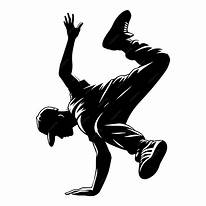
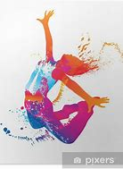

Bienvenue sur ma page destinée à mon loisir favori:LA DANSE


.jpeg)
.jpeg)
.jpeg)
Moi ;c'est Bright et j'aime m'enroller_ dans divers loisirs mais pas autant que la danse. En effet J'adore danser et épater le public en enchainant mes pas au rythme de la musique.Je suis né avec un certain désir de découverte par conséquent j'ai déja essayé pas mal de choses qui s'averaient bien me réussir mais s'il y ait une chose dont je ne me suis jamais séparé malgré mon allure calme c'est bien la danse.Qu'est-ce que la danse? Que représente-t-elle pour moi;Pour d'autres?Laissez moi donc vous réveler le plaisir qui m'anime à l'égard de la danse et l'admiration que je voue aux grands danseurs
La danse est présente à travers tous les âges et toutes les civilisations .Il suffit de regarder certaines peintures rupestres dans les grottes de nos ancêtres pour se rendre compte que l’on danse depuis la nuit des temps. À l’époque, la danse a une valeur rituelle : invocation des dieux, célébration du cosmos... Elle est aussi un moyen de séduction ou d'expression pour assurer la pérennité du vivant. Des dessins datant du paléolithique représentent des hommes vêtus de masques d’ours qui se meuvent en cercle et laissent penser que la danse sert d’invocation avant la chasse, même si son but n’est pas précisément connu.La danse résidait donc depuis l'antiquité;le moyen-age et a meme atteint la renaissance ou les danses se sont diversifiées.C'est en Italie que se forge un premier vocabulaire puis vient la naissance de la danse classique et celle contemporaine.